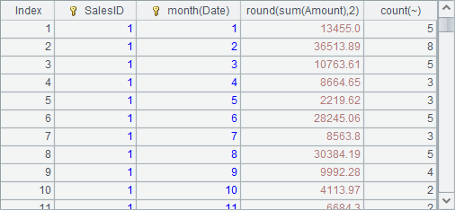
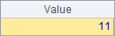
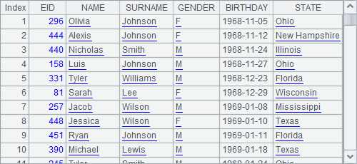
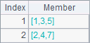
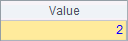
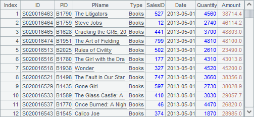
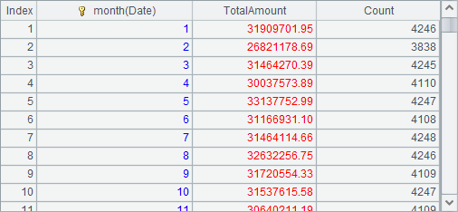
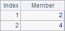
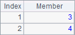

esProc uses sequences and two-dimensional sequences to represent vectors and matrices respectively:
|
|
A |
|
1 |
[-5, 8, 11] |
|
2 |
=A1(3) |
|
3 |
[[-5, 8, 11]] |
|
4 |
[[1,3,5],[2,4,7]] |
|
5 |
=A4(2)(1) |
|
6 |
=transpose(A4) |
A1 directly defines a vector using a sequence. The vector is a single-column column vector, which is displayed as it is defined:

We can get the number of a certain row from a column vector according to the ordinal number, as we do with a sequence. A2 gets the number of the third row:

There is also the row vector with only one row. Some linear algebra functions can automatically convert a column vector to row vector, or vice versa, as needed. A3 provides a method to define a row vector directly, which is equivalent to defining a matrix having only one row:

The definition of a matrix is a two-dimensional sequence. Each member of the sequence represents a row in the matrix. We can get an element of a matrix through its row and column numbers. A5 gets the number at the second row and in the first column. Below are results of A4 and A5 respectively:
 
We use transpose() function to transform rows to column, or columns to rows, in a matrix. A6 transposes a 2*3 matrix to a 3*2 one:

|
|
A |
|
1 |
[[1,3,5],[2,4]] |
|
2 |
=A1(2) |
|
3 |
=A1.(~(2)) |
|
4 |
=A1.len() |
|
5 |
=A1.max(~.len()) |
A row of a matrix can be directly obtained according to its row number, such as A2 that gets the second row. But getting a column of a matrix involves a loop operation on the sequence, as A3 get the second column. The first result below is the intitial sequence A1 generates.
  
When a matix has blank elements, it is error-prone to get a column from it. It is recommended that all elements in a matrix be defined even an element is blank. A1¡¯s definition can be modified as [[1,3,5],[2,4,]].
The length of a matrix is its number of rows, which can be directly obtained using A.len() function. The length of each row in a matrix is known as its number of columns, which needs to be obtained using A5¡¯s method that gets the maximum number of columns for the row when not all elements in the matrix are defined. Below are results of A4 and A5:
It would be the best to define the same number of columns for every row to avoid calculating the maximum number.